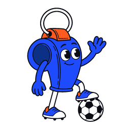
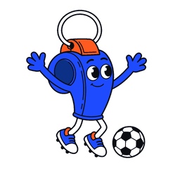
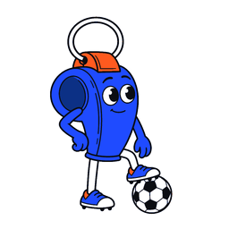

Retta · Mascota finalFondo oscuro · #181818| Tamaño | Bienvenida | ¡Ya se armó la reta! | Esperando jugadores | Partido cancelado |
|---|
| 48 px |  |  |  |  |
|---|
| 120 px | | | | |
|---|
| 240 px | | | | |
|---|
| PNG | 1024 · 512 · 256 | 1024 · 512 · 256 | 1024 · 512 · 256 | 1024 · 512 · 256 |
|---|
Comparación de siluetas · 48 px| Bienvenida | ¡Ya se armó la reta! | Esperando jugadores | Partido cancelado |